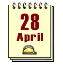

世界职业安全健康日

1989年，美国和加拿大工人在为因工作受伤或死亡的工人举行悼念活动时，就萌生了设立“职业伤亡者纪念日”的想法。为让严重的职业安全卫生问题引起国际社会的关注、弘扬工作安全与健康文化、促使工伤死亡人数下降。1996年，国际自由工会联合会组织工会运动发起了“国际职业伤亡者纪念日”活动，这个近百个国家参与的纪念日的目的是让我们铭记那些遭受职业事故和职业病伤害的工人。2001年，国际劳工组织总干事，胡安·索玛维亚宣布,将4月28日定为“世界工作安全健康日”。由此，每年的4月28日国际劳工组织都将关注并支持各国开展纪念活动。国际劳动组织在该组织的网站上还开辟了活动专栏，供各国从网上下载此项活动的张贴画、活动日程表、世界工作安全健康日的象征图案、别针、粘纸、发布新闻和简报等服务。国际劳工组织专门为该活动设计了张贴画，该画的边框为黄黑相间的图案作为全体劳动者预防、安全和健康的象征。从2001年起国际劳工组织将该活动作为政府组织、雇主组织以及工人组织共同参与的活动之一。
欲想了解详情，请点击：http://www.ilo.org/safework/events/safeday/lang--en/index.htm

相关链接：